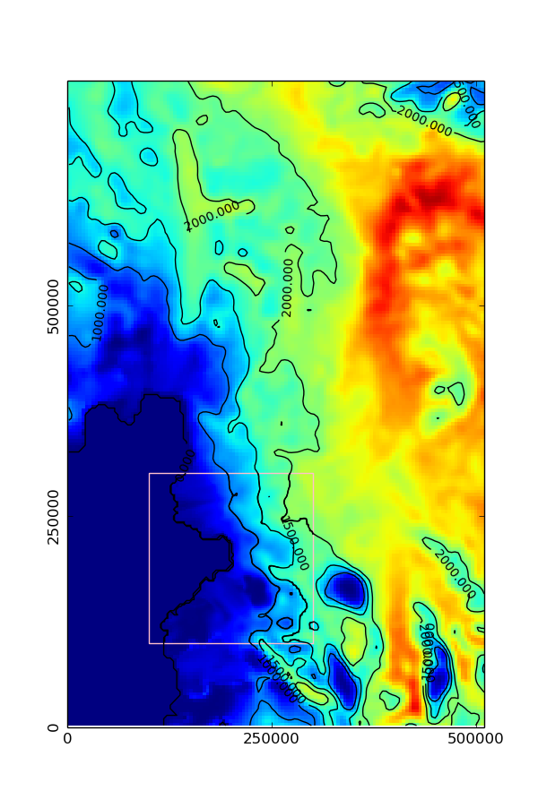

While VisIt is useful for plotting BISICLES output, it it often preferable to use popular tools such GNU R, Python, or MATLAB to analyze BISICLES output. libamrfile is distributed with BISICLES and provides a C-compatible interface to Chombo AMR data that can be accessed through these common tools, and through various FORTRAN versions and of course C. Note that if you want to control BISICLES rather than analyze output, e.g to interface with an atmosphere model, then the cdriver interface is more suitable
We will need to build a shared library (libamrfile.so) as part of the installation process. On some common platforms (such as the ubiquitous X86_64 with GNU compilers), the -fPIC compiler flags is needed for both C++ and Chombo Fortran (ChF) components. Make sure the -fPIC flag is set in your Make.defs.local file, e.g
cxxdbgflags = -fPIC cxxoptflags = -fPIC fdbgflags = -fPIC -fbounds-check foptflags = -fPIC -O3These flags are already set in the current version of Make.defs.local in $BISICLES_HOME/BISICLES/docs, but were not set in older versions. If you see an error like
/usr/bin/ld: $BISICLES_HOME/Chombo/lib/libamrtools2d.Linux.64.g++.gfortran.DEBUG.a(AverageF.o): relocation R_X86_64_32 against `.rodata' can not be used when making a shared object; recompile with -fPIC $BISICLES_HOME/Chombo/lib/libamrtools2d.Linux.64.g++.gfortran.DEBUG.a: error adding symbols: Bad value collect2: error: ld returned 1 exit status make[1]: *** [libamrfile.so] Error 1Then you need to set these flags, and remove older object files
> cd $BISICLES_HOME/Chombo/lib > make clean
>cd $BISICLES_HOME/BISICLES/code >R CMD INSTALL libamrfileThis has not been widely tested, it works best if R has been compiled with the same compiler as BISICLES/Chombo, it can easily fall foul of static/shared library paths and so on. On the other hand, it will generally be installed on a system you have plenty of control over (ie a personal computer of some sort rather than a cluster), so issues should be soluble. If the installation is succesful, libamrfile can be imported into R in the usual way, ie
require libamrfile
amrID1 <- amr.load("plot1.2d.hdf5") #load plot1 data
amrID2 <- amr.load("plot2.2d.hdf5") #load plot2 data
foo(amrID1,amrID2) #some function that acesses data from plot1 and plot2
amr.free(amrID1) #free plot1 data from memory
baz(amrID1) # would fail, since this memory was freed
bar(amrID2) # ought to succeed, since plot2 is still in memory
amr.free.all() #any remaining memory is freed
require(libamrfile)
amrID <- amr.load("plot.amundsen.2d.hdf5")
#read a box of thickness data from level 0
b0 <- amr.read.box(amrID,lev=0,lo=c(0,0),hi=c(128,128),comp="thickness")
#read a box of thickness data from level 0. some of this data
#will be copied from level 0, other data will be from finer levels
#here we use piecewise interpolation, use interpolation_order=1 for linear
b1 <- amr.read.box(amrID,lev=1,lo=c(50,50),hi=c(150,150),comp="thickness",interpolation_order=0)
#free up memory storing the the amr data
amr.free(amrID)
#plot box data
par(mfrow=c(1,1))
thkzl <- c(1,4000.0) #suitable range for thickness data
thkcol <- topo.colors(128)
#low res data
image(b0$x,b0$y,b0$v,zlim=thkzl,col=thkcol,xlab="x (m)", ylab="y (m)")
contour(b0$x,b0$y,b0$v,add=TRUE,lev=c(0,500,1000,1500,2000))
#paste the higher res data on top
image(b1$x,b1$y,b1$v,add=TRUE,zlim=thkzl,col=thkcol)
contour(b1$x,b1$y,b1$v,add=TRUE,lev=c(0,500,1000,1500,2000))
#draw a border round the high res box
dx = b1$x[2] - b1$x[1]
rect(min(b1$x)-dx/2, min(b1$y)-dx/2,max(b1$x)+dx/2, max(b1$y)+ dx/2,border="pink")
amr.free.all()
The resulting figure should show a color-map and contour plot of ice thickness, with a high resolution box
> cd $BISICLES_HOME/BISICLES/code/libamrfile > make libamrfile.so
Python then needs to know where to look for this library and the modules that access it. Set the relevant environment variables : assuming bash
> export LD_LIBRARY_PATH=$BISICLES_HOME/BISICLES/code/libamrfile:$LD_LIBRARY_PATH > export PYTHONPATH=$BISICLES_HOME/BISICLES/code/libamrfile/python/AMRFile:$PYTHONPATH
The Python package is called amrfile, so far it has one module (io), which can be imported in the usual manner
Python 2.7.4 (default, Apr 30 2013, 14:13:25) [GCC 4.7.2] on linux2 Type "help", "copyright", "credits" or "license" for more information. >>> from amrfile import io as amrio
>>> from amrfile import io as amrio
>>> #load a file and create a lookup
>>> amrID1 = amrio.load("plot1.2d.hdf5")
>>> amrID2 = amrio.load("plot1.2d.hdf5")
>>> #operations should be able to access plot1 and plot2 data through amrID1 and amrDI2
>>> amrio.free(amrID1)
>>> #operations should no longer able to access plot1 data through amrID1
>>> amrio.freeAll()
>>> #operations should no longer able to access any through amrID1
The easiest way to plot maps and integrate quantities of interest is through the the readBox2D function. It allows the user to specify a rectangular box, defined as a grid on one of the AMR levels, which will be filled with uniform resolution data derived from AMR data. Some data might be piecewise or linearly interpolated from a coarser resolution part of the mesh, other data could be averaged from finer resolution regions.
The example code below assumes a file named plot.amundsen.2d.hdf5 is in the current working directory
from amrfile import io as amrio
import numpy as np
import matplotlib.pyplot as plt
import matplotlib.colors as col
import matplotlib.patches as pat
amrID = amrio.load("plot.amundsen.2d.hdf5")
thkcomp = 0
thklim = col.Normalize(0.0,4000.0) # limits for thickness colormap
thkc = [0,1000,1500,2000]
#read a box of thickness data at the lowest resolution
lo = [0,0]
hi = [127,191]
order = 0 # interpolation order, 0 for piecewise constant, 1 for linear
level = 0
x0,y0,thk0 = amrio.readBox2D(amrID, level, lo, hi, thkcomp, order)
#set up figure axes
asp = (max(y0)-min(y0))/(max(x0)-min(x0))
fig = plt.figure(1,figsize=(3, 3*asp))
plt.xlim (min(x0),max(x0))
plt.ylim (min(y0),max(y0))
plt.xticks([0,250e+3,500e+3])
plt.yticks([0,250e+3,500e+3],rotation=90)
#color and contour plot
fig = plt.pcolormesh(x0,y0,thk0,norm=thklim,figure=fig)
cs = plt.contour(x0,y0,thk0,thkc,figure=fig,norm=thklim,colors='black')
plt.clabel(cs, inline=1, fontsize=10)
#read thickness data at level 1 resolution
lo = [50,50]
hi = [150,150]
level = 1
x1,y1,thk1 = amrio.readBox2D(amrID, level, lo, hi, thkcomp, order)
plt.pcolormesh(x1,y1,thk1,figure=fig,norm=thklim)
plt.contour(x1,y1,thk1,thkc,figure=fig,norm=thklim,colors='black')
#rectangle around the highres area
dx = x1[1] - x1[0]
c=[min(x1)-dx/2.0,min(y1)-dx/2.0]
w = max(x1)-min(x1) + dx/2.0
h = max(y1)-min(y1) + dx/2.0
plt.gca().add_patch(pat.Rectangle((min(x1)-dx/2.0,min(y1)-dx/2.0) , w, h, edgecolor = 'pink', fill=False))
plt.savefig("libamrfile_python.png")
amrio.free(amrID)
The resulting figure should show a color-map and contour plot of ice thickness, with a high resolution box
To come once we figure out how to make MATLAB load the correct libstdc++